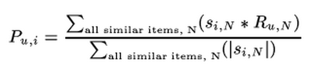

IMPLEMENTIONS
SVD
"Matrix factorization models map both users and items to a joint latent factor space of dimensionality f, such that user-item interactions are modeled as inner products in that space. Accordingly, each movie i is associated with a vector qi and each user u is associated with a vector pu,
For a given item i, the elements of qi measure the extent to which the item possesses those factors. For a given user u, the elements of pu measure the extent of interest the user has in items that are high on the corresponding factors."
Koren, Yehuda, Robert Bell, and Chris Volinsky. "Matrix factorization techniques for recommender systems." Computer 8 (2009): 30-37.
We will explain the model in a simple example. To make the model easy to understand, let's assume two users here: A and B and two movies here: Transformer and Rush hour. As for A, he perhaps prefers the fiction movie and less likes the action movie, thus A's preference's matrix may like the right top matrix.
The movie transformer contains 0.9 fiction and 0.2 action content, then A is likely rating transformer 0.9*0.7+0.2*0.2 = 0.67.
Thus, the model can be denoted as:
r is the rating matrix, q is the user vector, p is the item vector. we try minimize the difference between known rating matrix and p inner product with q. Here we added regularized model the lambda part to avoid the overfit situation.
To solve the model, two approaches are available. The first one is stochastic gradient decent and the second one is alternating least squares. In our project, we code the stochastic gradient decent to solve the problem, since the stochastic gradient decent method is easier and faster than ALS, though at some situation, ALS is better than stochastic gradient decent such as: when the system can use paralleliziation and etc.
At each iteration of gradient decent, we will update the user vector and item vector denoted by following equation:
The e here is the prediction error which is calculated by the origin score minus the prediction score. Gama here is the learning rate. We try to tune up the difference value, and finally get a relative good one. The performance can be find at performance part.
Item-based Collaborative Filtering
Item-based Collaborative Filtering is a model-based algorithm for making recommendation. The algorithm first find the similarity between every items in the dataset. The similarity is calculated by one of the number of similarity measures. This model can predict the unrated items by comparing the similarity between that unrated item and other rated items of the user.
Get data, store them in Matrix!
Fisrt, this matrix record the rate for every items from every user.
Similarity between two items?
Similarity between two items is measured by all the users who have rated these two items, using Cosin-based similarity. matrix record that rate foor every items from every user. For example, User 2 rates item i 3 and rate item j 5. To comput the similarity between item i and j, we choose pair (3,2,2,3) and (5,1,5,2), calculating Cosin-based similarity using: Then, store the similarity value between every two item in a similarity matrix called s.
How to predict the unrated value?
Once we make a model using similarity measures function, we can predict the rating for any user-item pair by using the idea of weighted sum. First we take all the items similar to our target item, and from those similar items, we pick items which the active user has rated. We weight the user's rating for each of these items by the similarity between that and the target item. Finally, we scale the prediction by the sum of similarities to get a reasonable value for the predicted rating: User-based Collaborative Filtering
User-based Collaborative Filtering is a model-based algorihtm for making recommendation. It can be divided into three steps: data representation, forming the neightbors of target user and producing the recommendations.
Data representations
Forming Neighbors
- Cosine Similarity In this case, two users are regarded as two vectors in the n dimensional item space. The similarity between them is measured by computing the cosine of the angle between these two vectors. Formally, similarity between users i and j is given by
where I J, represent the n dimensional vectors that users i and j rated on the n items; Item represents the whole items; Ric Rjc denote the ratings user i and j on the item c .
- Adjusted Cosine Similarity Basic cosine measure has one important drawback that the differences in rating scale between different users are not taken into account. The adjusted cosine similarity offsets this drawback by subtracting the corresponding user average rating from each co-rated pair. Formally, the similarity between user i and j is given by
where Iij represents the items that user i and j co-rated; ~Ri, ~Rj denote the average rating of user i and j.
- Pearson's Collection Similarity In this case, similarity between users i and j is measured by computing the Pearson correlation. To make the correlation computation accurate we isolate the co-rated cases. The correlation similarity is given by
Prediction
In a typical user-based movies recommendation systems, user input data is a collection of reviews of movies, and usually can be represented as a m * n user movies matrix as R.
Each user is represented by item-rating pairs, and can be summarized in a user-item table, which contains the ratings Rij that have been provided by the ith user for the jth item, the table as following.
Where Rij denotes the rating of item Ij rated by a user Ui. If user Ui has not rated item Ij, then Rij =0. The symbol m denotes the total number of users, and n denotes the total number of items.
User-based recommendation system, the most important step is to target users based on similarity calculation of neighbor users. The main objective of the formation of a neighbor, for a user u, to find an orderly queue l users N = {N1, N2, ... , Nl}, makes the sim (u, N1) of the value of the maximum, sim (u, N2) the value of the second, and so on. Choosing a proper similarity method can obviously improve the performance of user-based CF. The three basic similarity methods are as follows:
we compute a prediction of the target user's rating to an item from a combination of the selected neighbors' ratings. The prediction formula is as follows:
GIHUB SITE:
VISIT SITEHow to import the project?
1. download the whole file except the file in web folder from github.
2. New a project in the Eclipse.
3. Copy the file in src folder into the src folder in your new project.
4. Copy other files under the project folder.
5. Run Test.java
How well do they perform?
10-CROSS VALIDATION
SVD Based
This is a basic performance for our system.
We tried to tune the parameter and get more results in our report.
To check it, click here ~
| RSME/TURN | 1 | 2 | 3 | 4 | 5 | 6 | 7 | 8 | 9 | 10 |
| 0.98158 | 0.96639 | 0.98995 | 0.97669 | 0.96669 | 0.97912 | 0.99078 | 0.99178 | 0.99867 | 0.98343 |
For comparison, Netflix system achieves RMSE = 0.9514 on its dataset with the same method.
Item Based
We use Consin-Based Similarity to calcualte our similarity.
| RSME/TURN | 1 | 2 | 3 | 4 | 5 | 6 | 7 | 8 | 9 | 10 |
| 0.932 | 0.974 | 0.953 | 0.946 | 0.952 | 0.931 | 0.932 | 0.961 | 0.92 | 0.9 |
User Based
We use Consin-Based Similarity to calcualte our similarity.
| RSME/TURN | 1 | 2 | 3 | 4 | 5 | 6 | 7 | 8 | 9 | 10 |
| 0.954 | 1.031 | 0.974 | 0.947 | 1.1 | 0.968 | 0.937 | 0.968 | 0.936 | 0.928 |
Questions?
WAYS TO CONTACT US
If you have any questions, please feel free to contact us.